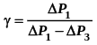
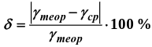

При закрытом клапане накачать воздух в сосуд так, чтобы измеряемое манометром избыточное давление стало
равным 100 – 130 мм. рт. ст.
Через некоторое время, когда давление перестанет падать, записать в таблицу величину давления ΔР1
Открыть на мгновение клапан сосуда и, когда стрелка манометра упадет до нуля, быстро закрыть его. Через
некоторое время, когда давление перестанет расти, записать величину давления ΔР3 в таблицу
Повторить предыдущие пункты пять раз.
По формуле  рассчитать коэффициент Пуассона для каждого опыта. Вычислить среднее значение
коэффициента Пуассона γср
Найти теоретическое значение коэффициента Пуассона теор для воздуха, считая его молекулы жесткими
двухатомными (указание: воспользоваться определениями коэффициента Пуассона и молярных теплоемкостей при
постоянном объеме и давлении)
равнить теоретическое и среднее экспериментальное значения коэффициента Пуассона, оценив величину
относительного отклонения по формуле 